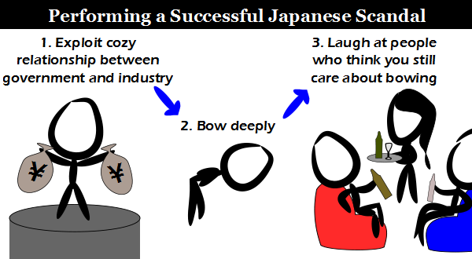

Comic JK 812
When I Feel Like It
⇤
<
?
>
⇥

⇤
<
?
>
⇥
Forum
.
RSS
.
Digg
.
Facebook
.
Reddit
.
Twitter
.
Stumbleupon
Enter your thoughts on number 812 here. Please, no spamming, trolling, or skipping the bow. 1) Exploit cozy relationship between dorky college boys and your mother 2) Pay your mother well 3) Laugh at people who think she puts out for free It indeed could prove to be a wise move for a US person to consider cashing out in Yen. Btw: Did you mean America in general, or the US? >America refers to the United States. The Americas refers more generally to the western hemisphere. >>I disagree. I have never heard "The Americas" used to refer generally to the western hemisphere. >>>Technically it's not quite the Western hemisphere. The western hemisphere also includes the extreme west of Europe and Africa, and several hundred/thousand oceanic islands to which "The Americas" does not refer. >>>You need to do more hearing. >>>^ >>>>Huh? >>>>>Meaning "The Americas" is a globally used term, and its time to crawl out of your cave >>>>>>America means US in colloquial language... Who would mean Canada or Mexico by saying America? North America though is a continent :) >>>>>>>this >>>>>OK how about "new world" instead of "western hemisphere? >>>>>>>"The Americas" refers to the two continents. End of story. >>>>>>>>I can agree to that. Hipsterdom in Japan I don't get it. > It's a joke on how people can get away with tons of stuff and still seem kosher by acting respectful. (I think I just mixed the Jewish and Japanese cultures in that statement. Anyone up for kugel sushi?) = kushi jjj